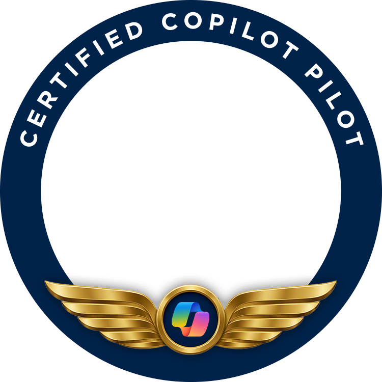

Certified Copilot Pilot Badge
A stable, public home for the Certified Copilot Pilot badge image, served over HTTPS by GitHub Pages so it can be referenced as an external image source.

The image
The badge is a circular frame, not a solid graphic. A dark navy ring carries the words CERTIFIED COPILOT PILOT in white capitals. Gold aviator wings spread across the bottom of the ring, flanking a gold-rimmed medallion holding the Microsoft Copilot mark. The center of the badge is fully transparent, so it can be layered over a profile photo, an avatar, or any background color.
- File
certified-copilot-pilot-badge.png- Format
- PNG, 8-bit RGBA (alpha transparency)
- Dimensions
- 750 × 750 pixels, square
- Center
- Fully transparent — intended as an overlay frame
- License
- See the repository
Direct image URL
Use this URL anywhere an external image source is requested. It is served with the correct image/png content type over HTTPS, from GitHub’s CDN, with no authentication and no hotlinking restrictions.
https://greggrodgers02.github.io/Certified-Copilot-Pilot-badge/certified-copilot-pilot-badge.pngUsing the badge in a Copilot agent
As an image the agent returns in chat
Paste the markdown below into your agent’s instructions, and tell the agent when to show it — for example, “when a user completes the training, display the Certified Copilot Pilot badge.”
As a public website knowledge source
Add this page’s URL as a public website source, so the agent can describe the badge and hand out the image link:
https://greggrodgers02.github.io/Certified-Copilot-Pilot-badge/Embedded in another page
<img src="https://greggrodgers02.github.io/Certified-Copilot-Pilot-badge/certified-copilot-pilot-badge.png"
width="750" height="750"
alt="Certified Copilot Pilot badge">Layered over a photo
Because the center is transparent, the badge can be stacked on top of a square image:
<div style="position:relative;width:300px;aspect-ratio:1">
<img src="photo.jpg" style="position:absolute;inset:0;width:100%;height:100%;
object-fit:cover;border-radius:50%">
<img src="https://greggrodgers02.github.io/Certified-Copilot-Pilot-badge/certified-copilot-pilot-badge.png"
style="position:absolute;inset:0;width:100%;height:100%">
</div>